As a broke college kid, the first thing I think off when I get a new project is "How can I turn this into a Christmas Gift and save some money". This mindset drove me to pick a cute picture of me and my brother that I think he'd like to have for a gift. The first thing that I had to do was to make create a PNG out of the image, and remove the background. This was done easily in Paint 3D, results are below.
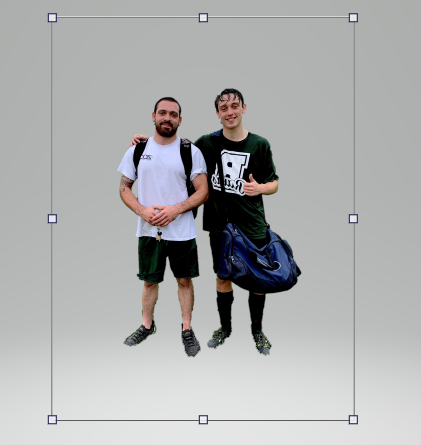The next step was to turn this image into something that could be laser cut, so I went to the same website I used for my Vinyl Cutting Design and turned my design into some Stencil Sketch Art. This step took a while becuase I couldnt get the settings to a good enough point where neither of us looked like goblins, but I was able to edit the shadows in the orginal file to get a pretty decent output.
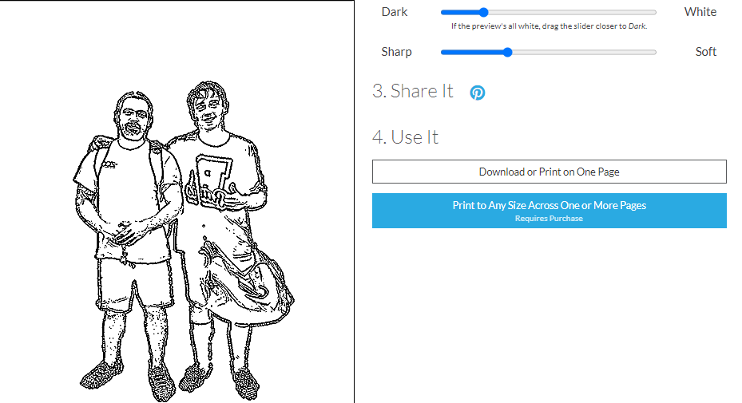Learning from Past Mistakes! Last time I used this online tool I had an issue with it leaving a lot of tiny spots and lines that made printing nearly impossible. I went around this by using Adobe Illistrator and the Eraser Tool to remove the tiny dots which saved me a lot of time on the laser cutter. The biggest thing I was able to change was to get rid of Trevor's unibrow, which I think he will really appreciate. I Also used Adobe Illistrator to make the frame and set the file to the correct size. I downloaded the Acrylic file, and loaded it in AI. Then I took the Brother Pic I created and slid it over to the template page. After that it was as simple as sliding the top of the frame to fit my image and calling it a day.
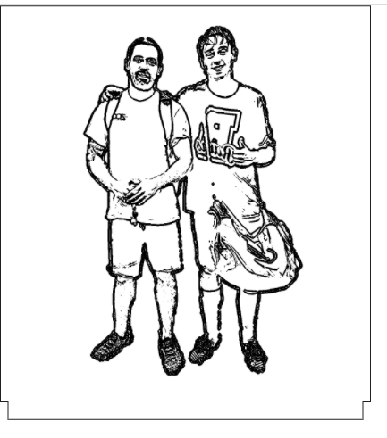Finally, I loaded my file into the glowforge and got it cutting, being very careful to not burn the lab down. My cut took around 20 minutes, and I was super surpised with how nice the details came out. These details made trimming a pain, but I used an exacto knife and it worked great.
My project started with signing up for an electronics training. I had already taken a Circuitry class as Wheaton, so I had at least a basic knowledge of circuit design. During this training I made the circuit board that would control my LED's. The process for that was pretty straight forward. After cutting out the footprint of the board using what was essentially a mini CNC Machine, I moved to the sodering station and put on my MicroControler (the brains of the circuit) my power input (takes input from the wall plug) and a capacitor (stores the AC current). I attached them to my LED Light Strip and voila, I had a working Light Strip! When I was in the Electronics Lab I got my cutouts where my acrylic would sit, and where my circuit would lay. When I left the lab that day my LEDs were working....but more on that later.
This was by far my best experience using Fusion360. I started by making a base with length of 15.15cm, and width of 4.25 cm, slightly larger then the wood cut pieces I recieved because from what I've read PLA Filiment shrinks a bit when it hardens. I extruded the base slightly, then used the line tool to outline all the corners of the box, including where I wanted the gap to be for the power input. Doing this made building the side walls very easy: Staying in sketch mode I made a rectangle that connected the 2 corners on the appropriate plane and then added a height. My biggest worry was accidently making something too small, so I evaded this by being able to double check my interior side size with the lines I places, and the exterior side size with the 3D model. During my design process I discovered that one wooden plate didnt hold my arylic board well enough so I added enough room to put two in.
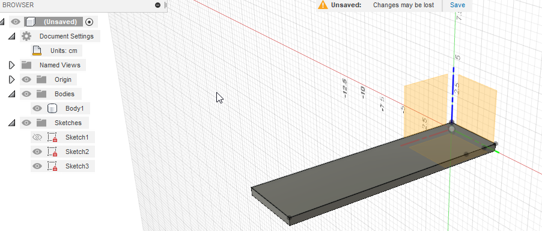 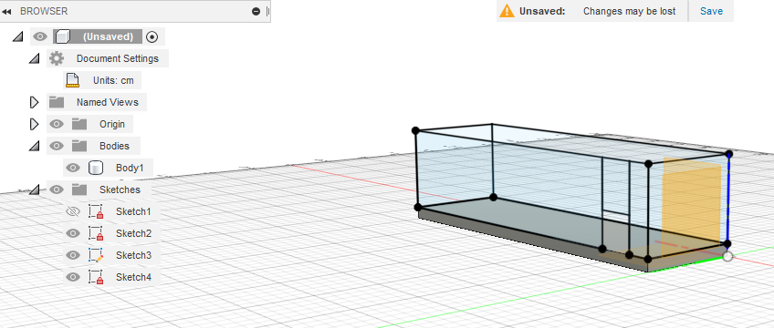 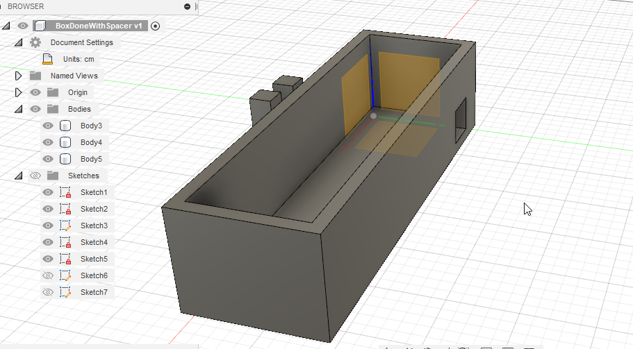My design has a few features that make it unique. The frist is my 1.5cm spacing blocks which will help hold up the LED Light Piece. The second is my (actually not printed out yet) removable cover. This was added as an afterthought becuase I thought it would make it look really cool. I essentially just took the design for the wooden cover piece with a slit cut into it and turned it into a Fusion File and added walls to it with the same method I used for my box outline.
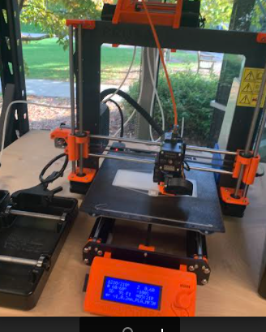 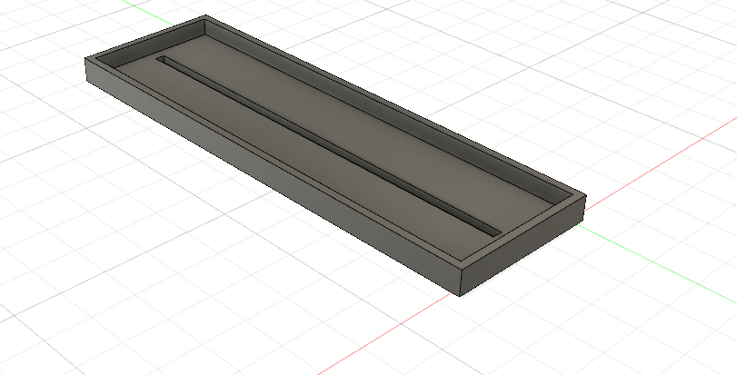I only had one issue in printing this project, and it honestly wasnt my fault. I was using the top shelf printer and had some nice black PLA filiment in it. I was watching the print for about 45 mins and left the lab, but when I returned the PLA that was supposed to be feeding into my machine had been knocked over and my print had stopped becuase it wasnt able to extract. I just had to reset the print (this time with some white PLA because I felt like I needed a change) and it came out perfectly.
To my suprise almost everything fit in really good. The wooden pieces all fit exactly as I wanted, and my spacing block worked like a charm. The only issue I had was with my LED light circuit. My board had gotten pretty knocked around from sitting on my desk for a week and wouldnt power up which really blew. It also didnt want to sit in nice on the bottom of the box. I can easily fix this issue with glue but becuase I know ill be taking the box apart to fix the circuit board I decided to let it stay wonky for the time being.
UPDATE: I dont know what sort of wizardry happens in the FAB Lab overnight, but I went back on Monday to check out my box again, and just for fun I plugged my lights in and they work. Please ignore the above section where I complained about breaking them
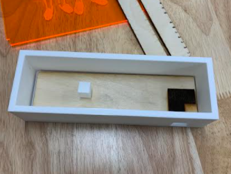 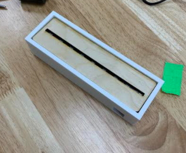 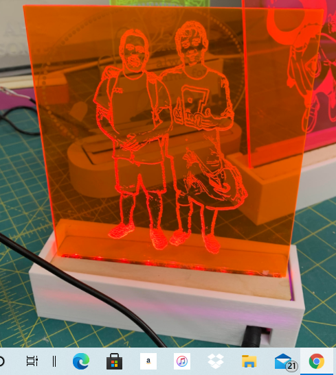 DESIGN FILES HERE